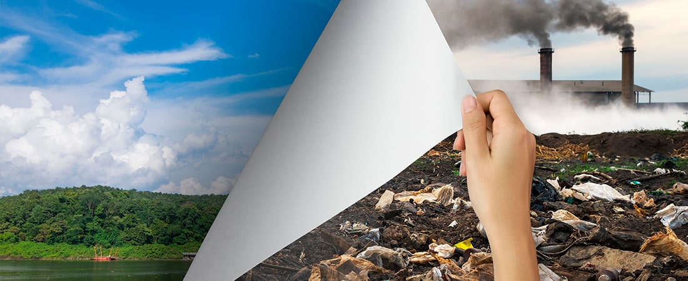
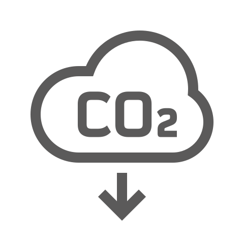
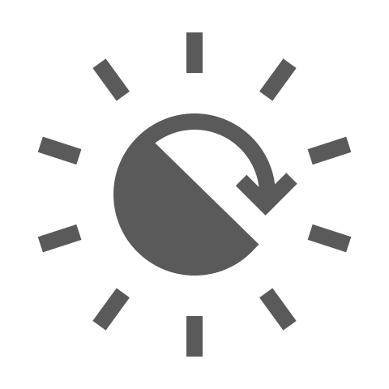

El Camino hacia un Futuro Sostenible
Las fuentes de energía son recursos que existen en la naturaleza y que el ser humano ha aprendido a utilizar para facilitar su vida.
Las energías no renovables provienen de fuentes limitadas y se agotan con su uso.
En cambio, las energías renovables se regeneran constantemente gracias a fenómenos naturales.
La transición energética es el conjunto de cambios en los modelos de producción, distribución y consumo de la energía para evitar las emisiones de gases de efecto invernadero.
El principal causante del cambio climático es el efecto invernadero. Determinados gases presentes en la atmósfera retienen parte de la radiación térmica emitida por la superficie terrestre, provocando el calentamiento global.
Muchos de esos gases de efecto invernadero están presentes de forma natural; sin embargo, la actividad humana ha provocado que aumente la concentración de algunos de ellos en la atmósfera, sobre todo el dióxido de carbono (CO₂).
El objetivo de este cambio es transformar el sistema energético, potenciando las energías renovables, la economía circular y otras formas de reducción de emisiones.
Este movimiento implica concienciar sobre el consumo responsable y sostenible de la energía, así como establecer pautas de eficiencia energética a través de la electrificación y digitalización de todos los procesos y sectores de la economía.
El cambio hacia un modelo de producción de energía más sostenible no consiste en el abandono de las fuentes fósiles, indispensables en ámbitos tan relevantes como el transporte aéreo o la industria naval. Así, entre las acciones que contemplan la transición energética se encuentran las siguientes:

Promover el uso de nuevos combustibles más sostenibles como los combustibles sintéticos o los biocombustibles.
Impulsar la generación eléctrica de bajo carbono y fomentar la electrificación de los principales sectores de la economía.

Tanto de las empresas como de la sociedad, fomentando la reducción de su huella de carbono.

Incentivar la investigación y el desarrollo de tecnologías limpias para acelerar la transición energética.